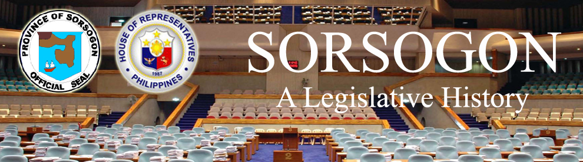

| History |
| Legislators |
| Laws |
| About |
 |
SORSOGON
The following text/information are lifted from the book of Lee W. Vance entitled Tracing your Philippine Ancestors which was published in Provo, Utah by Stevenson’s Genealogical Center in 1980 and Symbols of the State by the Department of Interior and Local Government of the Republic of the Philippines in 1998.
The hook-shaped province of Sorsogon occupies the extreme southeastern tip of Luzon Island’s Bicol Peninsula. Except for its northern boundary which it shares with Albay province, Sorsogon is entirely surrounded by water. The vast Pacific Ocean lies to the east, and narrow channels separate it from Burias and Ticao Islands to the west. The San Bernardino Strait, the link between the archipelago’s smaller western seas and the Pacific Ocean, separates Sorsogon from the northwestern Visayas Island of Samar, lying to the South.
Sorsogon, at the southeastern part of the Bicol Peninsula, is bounded on the north by the Province of Albay, on the east and northeast by the Pacific Ocean, on the south by the San Bernardino Strait, and on the west and northwest by the Ticao and Burias Passes. The province has an irregular coastline. There are good harbors in Bulan, Magallanes, and along the shores of Sorsogon Bay.
Sorsogon, with an area of 2,119.4 square kilometers and a population of 709,673 in 2007, consists of 14 towns (with Sorsogon as the capital).
Sorsogon is known for its historic and panoramic places, such as the century-old towers or baluartes in Sta. Magdalena, Bacon, Matnog, Casiguran and Bulusan; the eyecatching waterfalls in Guinlajon; the summer resorts along Lake Bulusan; the Tulong-Gapo in Bacon; the Bato Limestone in Bato; and the Irosin Church in Irosin.
Little is known historically concerning Sorsogon’s
Following is a time line 1,2 of events that led to the creation and development of the province of Sorsogon:
DATE |
EVENT |
|
Captain Luis Enriquez de Guzman, and Fathers Alonso Jimenez and Juan Orta celebrated the first mass at Otavi (site of the old town of Bulan). |
|
a chapel was built along the Gingara River in Magallanes. The missionaries reached the town of Pilar where the Abuca-Catamlangan mission was established |
|
Among the early towns founded in the province were Casiguran |
|
and Bulusan |
|
Fr. Pedro de Espellargas invented the abaca stripping knife which revolutionized fiber extraction and promoted rope-making of the cordage industry |
|
During the Muslim raids on the coastal towns of Sorsogon, Captain Pedro de Gastambide built a fort at Sirangan. Several watchtowers were also constructed at Gubat, Bacon, Bulusan, Sta. Magdalena and Matnog. |
|
The Spaniards abandoned Sorsogon during the Philippine Revolution |
|
The Japanese occupied Sorsogon |
|
Sorsogon was separated as a province from Albay |
|
The American forces under General William Kobbe occupied Sorsogon and set up a provisional military government. |
|
A civil government was established in Sorsogon |
|
ACT 124 extended the provisions of the Provincial Government Act to the province of Sorsogon. |
|
ACT 288 repealed paragraph (d) of section eight of the municipal code and all acts amendatory thereof, so far as concerns the town of Pilar in the province of Sorsogon. |
|
ACT 940 declared the barrios of Montufar and Manlabong, now a part of the municipality of Bacon, and the Barrio of Calao, now a part of the municipality of Gubat, all of the province of Sorsogon, to be a new municipality under the name of Prieto |
|
ACT NO. 1413 annexed the province of Masbate to the province of Sorsogon, and amending ACT NO. 74, as amended, by making the provinces of Albay and Sorsogon separate school divisions, and for other purposes |
|
ACT NO. 2390 changed the names of the barrios of Tublijon and Gibigaan, municipality of Sorsogon, province of Sorsogon |
|
ACT NO. 2934 authorized the separation of the subprovince of Masbate from the province of Sorsogon and the reestablishment of the former province of Masbate, and for other purposes. |
|
Major Licerio Lapuz and Salvador Escudero organized guerrilla units which joined forces with the American Liberation Forces in the liberation of Sorsogon |
|
REPUBLIC ACT 1028 converted the Sitio of Carayat, in the municipality of Prieto Diaz, province of Sorsogon, into a barrio |
|
REPUBLIC ACT 1664 changed the name of Barrio Paghaluban, municipality of Barcelona, province of Sorsogon, to Peñafrancia. |
|
REPUBLIC ACT 1718 created the barrio of Naspi, in the municipality of Pilar, province of Sorsogon. |
|
REPUBLIC ACT 1728 changed the name of Barrio Bual in the municipality of Pilar, province of Sorsogon, to Del Rosario. |
|
REPUBLIC ACT 2143 created certain barrios in the municipality of Bulan, province of Sorsogon |
|
REPUBLIC ACT 2531 changed the name of Barrio Boho in the municipality of Casiguran, province of Sorsogon, to San Antonio |
|
REPUBLIC ACT 2532 created the Barrio of Magsaysay in the municipality of Magallanes, province of Sorsogon |
|
REPUBLIC ACT 2814 created certain barrios in the municipality of Casiguran, province of Sorsogon |
|
REPUBLIC ACT 2923 changed the names of certain barrios in the municipality of Prieto-Diaz, province of Sorsogon |
|
REPUBLIC ACT 7380 declared October 17 of every year as a special holiday in the whole province of Sorsogon in celebration and commemoration of the anniversary of its establishment. |
|
Sorsogon is subdivided into 2 districts. The 1st district is composed of the municipalities of Casiguran, Castilla, Donsol, Magallanes, Pilar, and Sorsogon City. The 2nd district is composed of the municipalities of Barcelona, Bulan, Bulusan, Gubat, Irosin, Juban, Matnog, Prieto Diaz, and Santa Magdalena |
Sources:
1Vance, L. W. (1980). Tracing your Philippine ancestors. Provo, Utah: Stevenson's Genealogical Center.
2Velasco, C. R. and Untivero, R. G. (1998). Symbols of the State. Manila: National Media Production Center.

Congressional Library Bureau
Legislative Library Service